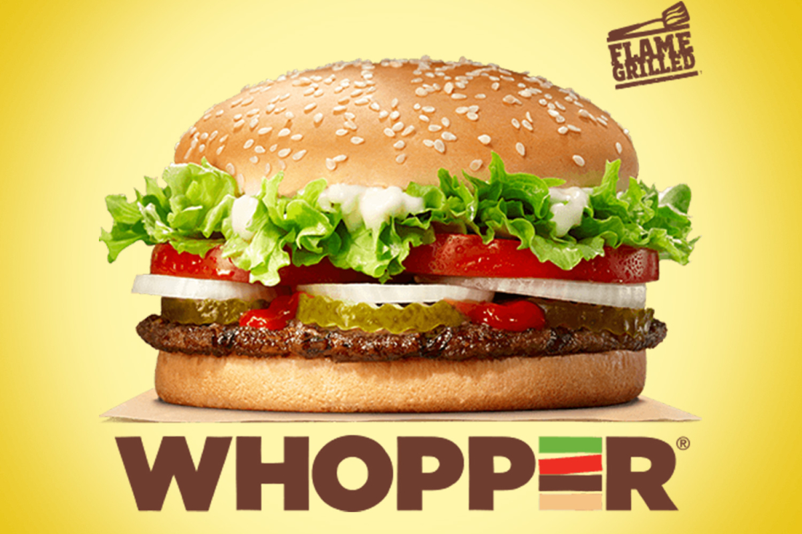

BURGER KING
Burger King (BK) is an American multinational chain of hamburger fast food restaurants. Headquartered in Miami-Dade County, Florida, the company was founded in 1953 as Insta-Burger King, a Jacksonville, Florida–based restaurant chain. After Insta-Burger King ran into financial difficulties in 1954, its two Miami-based franchisees David Edgerton and James McLamore purchased the company and renamed it "Burger King". Over the next half-century, the company changed hands four times, with its third set of owners, a partnership of TPG Capital, Bain Capital, and Goldman Sachs Capital Partners, taking it public in 2002. In late-2010, 3G Capital of Brazil acquired a majority stake in the company, in a deal valued at US$3.26 billion. The new owners promptly initiated a restructuring of the company to reverse its fortunes. 3G, along with partner Berkshire Hathaway, eventually merged the company with the Canadian-based doughnut chain Tim Hortons, under the auspices of a new Canadian-based parent company named Restaurant Brands International.
The 1970s were the "Golden Age" of the company's advertising, but beginning in the early-1980s Burger King advertising began losing focus. A series of less successful advertising campaigns created by a procession of advertising agencies continued for the next two decades. In 2003, Burger King hired the Miami-based advertising agency Crispin Porter + Bogusky (CP+B), which completely reorganized its advertising with a series of new campaigns centred on a redesigned Burger King character nicknamed "The King", accompanied by a new online presence. While highly successful, some of CP+B's commercials were derided for perceived sexism or cultural insensitivity. Burger King's new owner, 3G Capital, later terminated the relationship with CP+B in 2011 and moved its advertising to McGarry Bowen, to begin a new product-oriented campaign with expanded demographic targeting.
Burger King's menu has expanded from a basic offering of burgers, French fries, sodas, and milkshakes to a larger and more diverse set of products. In 1957, the "Whopper" became the first major addition to the menu, and it has become Burger King's signature product since. Conversely, Burger King has introduced many products which failed to catch hold in the marketplace. Some of these failures in the United States have seen success in foreign markets, where Burger King has also tailored its menu for regional tastes. From 2002 to 2010, Burger King aggressively targeted the 18–34 male demographic with larger products that often carried correspondingly large amounts of unhealthy fats and trans-fats. This tactic would eventually damage the company's financial underpinnings, and cast a negative pall on its earnings. Beginning in 2011, the company began to move away from its previous male-oriented menu and introduce new menu items, product reformulations and packaging, as part of its current owner 3G Capital's restructuring plans of the company.
OUR FAMOUS WOPPER BURGER IS WAITING FOR YOU!! 